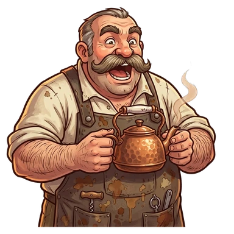

Wiki de Dagas & Defensas

¡HOOOO! Bienvenido. Dagas & Defensas es un idle de herrería medieval inspirado en las partidas de rol de mesa: forjás armas y armaduras, contratás aprendices que trabajan solos, y con lo que ganás armás una Posada de aventureros que salen de expedición, suben de nivel, completan gestas y, algún día, bajan al Abismo a enfrentar a Malgoroth.
Descargar en Google PlaySumate al Discord
Guía rápida
- Tocá los productos para forjar. Cada unidad que comprás produce más por ciclo.
- Contratá aprendices: forjan solos, aunque cierres el juego (hasta el tope offline).
- Al llegar a 25, 50, 100, 200, 300 y 400 unidades de un producto, su ciclo va el doble de rápido.
- Comprá las mejoras: multiplican lo que rinde un producto o toda una herrería.
- Mantené parejas Coronas y Escudos: los aprendices de una herrería se pagan con la moneda de la otra, y los Sellos del Gremio se calculan con la más débil.
- Con el 5.º producto de cualquier herrería se abre la Posada de TomTom.
- Cuando la producción se estanque, reiniciá en el Gremio: cada Sello da +1% de ingresos para siempre.